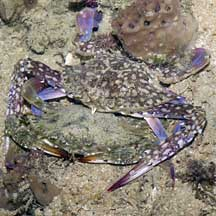
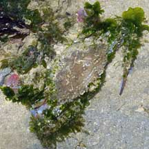
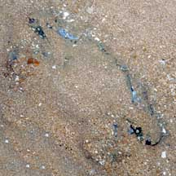
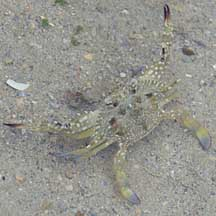

|
|
| crabs text index | photo index |
| Phylum Arthropoda > Subphylum Crustacea > Class Malacostraca > Order Decapoda > Brachyurans > Family Portunidae |
| Flower
crab Portunus pelagicus Family Portunidae updated Dec 2019
Where seen? Flower crabs are among our favourite seafood! It is commonly seen on many of our shores, especially the Northern shores and those with seaweeds and seagrasses. But it is not easy to spot. If trapped in a pool at low tide, it buries itself in the sand or mud. Besides the larger adults, there are also lots of smaller juvenile flower crabs hiding among the seagrass and seaweeds. Features: Body width 5-7cm to about 20cm. Body fan shaped, body sides with 9 white-tipped spines, increasing in size from the eye outward, the last spine a very large protruding horizontal spike. The eyes are not very far apart. Last pair of legs are paddle-shaped and rotate like boat propellers, so the crab swims well in all directions. It is a fully marine crab and cannot live long out of water. Pincers long narrow, armed with sharp spines. The difference between boys and girls: Male flower crabs have long pincers, twice to three times longer than their bodies are wide. Males are also more decorative, with blue markings and attractive patterns on their bodies. Females are better camouflaged in dull green and brown. The male's abdomen is more narrow forming a pointed triangular shape, while the female's is broader as she uses the abdomen to carry her eggs. Moult and mate: Like many other crabs, Flower crabs can only mate just after the female moults. Often, a male is seen protectively holding on to a female. He does this because she is either just about to moult; or he has just mated with her and wants to make sure no other male gets to her before her shell hardens. The male transfers his sperm into a special receptacle in the female. When the female is ready to spawn, she will use his sperm to fertilise her eggs. The fertilised eggs are attached as a big mass (called a sponge) to her abdomen where she cares for them until they hatch. They hatch into free-swimming larvae that drift with the plankton, changing into yet another form before settling down and developing into miniature flower crabs. |
 Changi, Jun 05 |
 Flower crab (top) next to its moulted shell (bottom) Sentosa, Jul 04 |
 Mating crabs, male on top. Pulau Sekudu, Jun 05 |
| Smaller juvenile flower crabs (1-2cm) may have
a wide variety of colours and patterns including bold bars and blotches. What does it eat? The flower crab is a predator. In other parts of the world, it has been reported to eat mostly slow moving, bottom-dwelling creatures such as snails and clams, and worms. It may also eat fish, shrimps and other crabs. Flowering crabs: Some flower crabs may have a 'garden' of various living seaweed and barnacles growing on their bodies, pincers and legs. These crabs are usually those infected by a parasitic barnacle (Thompsonia sp.) Role in the habitat: Flower crabs are predators. In turn, they are eaten by animals higher up in the food chain. Human uses: Flower crabs are edible and a favourite dish for many Singaporeans. They are caught with nets or baited traps. In Western Australia, they are an important fishery resource with 740 tonnes, valued at around $2.2 million, harvested in 1997/98. |
 Those infected with parasitic barnacles tend to be covered with seaweeds. Pulau Sekudu, Apr 06 |
 Buried in sand. Tuas, Oct 10 |
| Flower crabs on Singapore shores |
On wildsingapore
flickr
|
| Other sightings on Singapore shores |
 Terumbu Berkas, Jan 10 |
Links
|